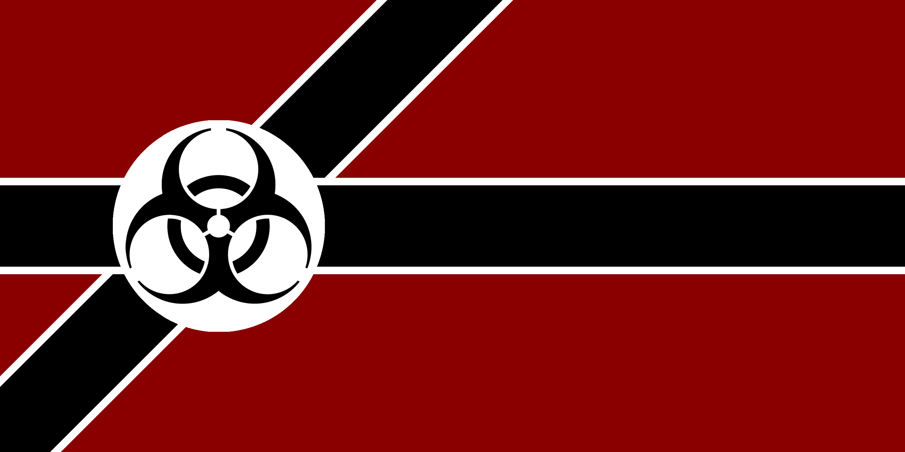
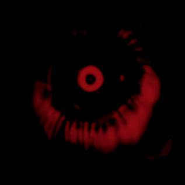
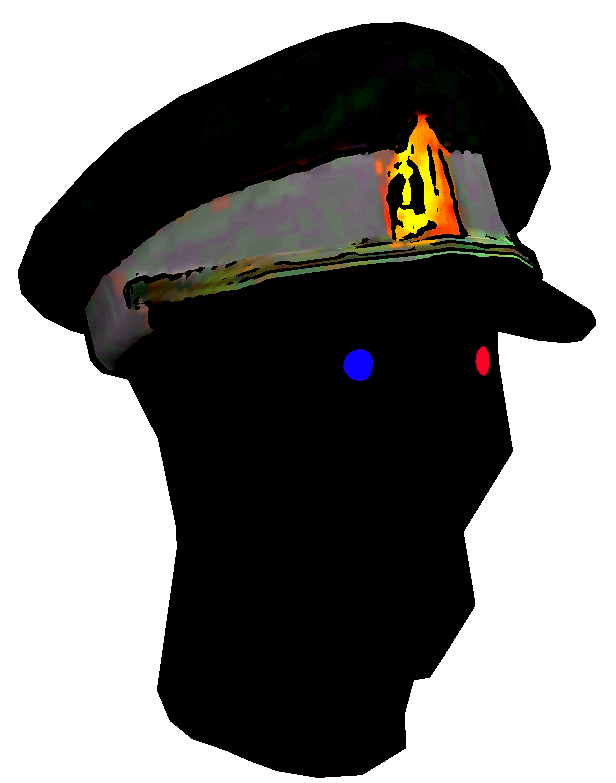

Sad World
This is where we revise history.
We'd say history is written by the winners, but who wins?
History
Supernatural selection
The Nightmare's perilous circumstances and conditions make it a struggle to exist almost anywhere in it. That's before accounting for creatures that need to eat you to survive and people that want to eat you for fun, although in the latter case, something 'normal' is more likely, like simply crushing your skull open.
To overcome this challenge, people began forming groups in the earliest days to increase their chances of survival in numbers. This usually succeeded and greatly prolonged the lifespan of those within their prototypical nation-states up until the removal of their leader either by the leader's death or the great demoness Democracy and her 'term limits', 'impeachments', and 'elections'.
Generations of life could certainly go on like this but the end of such large efforts and waste of the investment of imperceptible time by a civilization's people from a mere famine/plague/vote was ultimately not pleasing to the cosmic eye, Sotla.
Tragic context
Tell the story! C'mon!
For countless millennia, the surface of the Nightmare has existed as a bubbling pot of ideologies, nations, settlements, communities, and endless sinkholes into nothingness. This pattern changed with the arrival of two beings on this mortal plane: The Kommissar, and the Kommandant.
Both were created by the blood of Sotla, and possess no need for worldly pleasures beyond the faith and adoration of their chosen people.

Liver Failure once constituted a region of wetlands inhabited by innumerable human settlements, some small and some large. This was until the Kommandant arrived and orchestrated a popular coup. This would come to be called the Night of Long Pipes, after the lead pipes wielded by the Kommandant's paramilitaries. Now that His rule is cemented, He aims to transform Liver Failure into a hardy national organism capable of thriving under the harsh conditions of the Nightmare, with Himself as its central nervous system.
The workers of Liver Failure find fulfillment in unending labor, toiling until death however it may find them. They are the red blood cells of a great beast that only grows stronger the more they sacrifice of themselves to the unceasing machine. The Kommandant's Sanitar Squad, on the other hand, do their best to serve as Liver Failure's white blood cells. Not necessarily protecting the red, but eliminating pathological threats before they reach the vital organs.

The Kommunist republic of Kidneystan to the northeast has seen a significantly less tumultuous founding than its "little brother" in Liver Failure. Orders of magnitude larger and more industrially capable, the Kommandant seems to have tripped where the Kommissar strode, enraging the already roaring flame of their mutual rivalry. Built around the bustling city of Renalgrad, it stretches northeast into uncountable miles of snowy, frostbitten wasteland.
Night of the Long Pipes
The pipes were really long. We're still trying to remember that whole thing for now.
Beings
Supernatural
Sotla
As it turns out, that red thing in the sky is actually a cosmic eyeball. What the fuck?
- Who?
That's a tough question.
Our starscopes are pretty sure that it looks like this:

- Can you be more specific?
Not really.
What is certain is that this thing watches us from the darkness above, below, and all around us.
Despite the deniability of every other being that's popped up in mortal mythology since history were first recorded and mutilated, none have been able to deny the existence of Sotla, not even the Kommandant. It's the one thing that matches any description of godly beings that can be proven to exist.
- What does it do?
It watches. It knows.
- That's it?
That's it.
Sotlians
The substitutes for fallible human leadership spawned by Sotla.
- Sorry, the what?
They look something like this.

- That leaves more questions than answers--
Chosen by Sotla to incarnate, made with dust from the stars; a Sotlian is a post-human that does not need to eat, drink, breathe, or sleep.
All that is necessary for Him to live is the mere presence of starblood in His vessels and the structural integrity of His brain.
Such a leader often lives centuries, sometimes millennia to prolong His land's history and expand His influence – if war and betrayal does not kill Him first, madness will.
With only the mind to listen to within the body, each more uncountable year of continued existence contributes to erratic and irrational behavior in the immortal leader until He kills Himself or makes the kind of mistakes that will get Him killed.
- Can you give me an exam--
Today, the most notable of these are Liver Failure's Kommandant and Kidneystan's Kommissar who have been fierce rivals since Sotla gave them life. Driven by spite, the Kommandant wants few things more than to surpass and invade His rival's domain.
Mortal
Liverish
The burned and learned.
Kidneystani
The brave and cold.
Arrhythmian
The poor greedy bastards nobody can say anything nice about.
Nations
Liver Failure
Known for its pollution and how much they hate Kidneystan.
Defender of Fascism.
Kidneystan
Known for how goddamn cold it is and how much they don't like Liver Failure.
Summoner of Kommunism.
Arrhythmia
Known for being the only thing Liver Failure's Kommandant and Kidneystan's Kommissar can agree on – a threat.
Proprietor of Kapitalism.